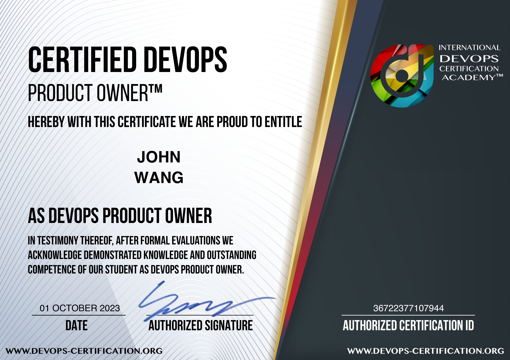

John's DevOps Certificates
- Certified DevOps Generalist (DevOps-GEN)
- Certified DevOps Product Owner (DevOps-PO)
- Certified DevOps Project Manager (DevOps-PM)
- Certified DevOps Developer (DevOps-DEV)
- Certified DevOps Information Security Engineer (DevOps-SEC)
Resource Links
Certificates (5)
Certified DevOps Generalist™ (DevOps-GEN™) from DevOps Academy

Certified DevOps Product Owner™ (DevOps-PO™) from DevOps Academy

Certified DevOps Project Manager (DevOps-PM™) from DevOps Academy

Certified DevOps Developer™ (DevOps-DEV™) from DevOps Academy

Certified DevOps Information Security Engineer™ (DevOps-SEC™) from DevOps Academy